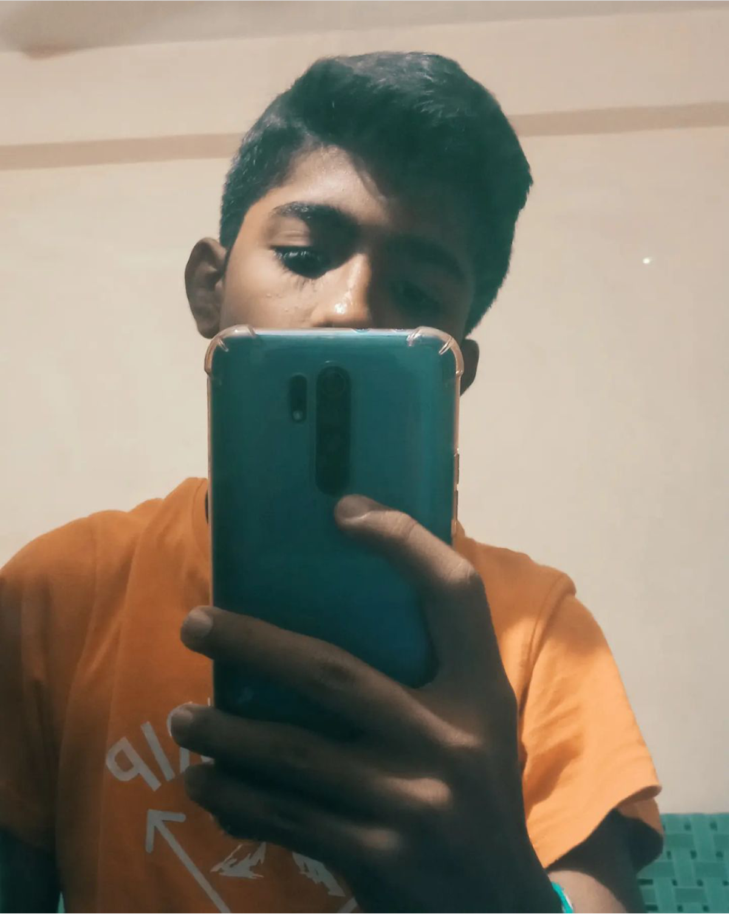

My Resume - Pavan Kumaar

Overview:-
This resume is an overview of what i had accomplished and learnt so far in my career as a student / web developer and a little info about my personal life.
I hope this resume helps you to get a clear understanding of my skills.
Education: -
Kidzee (2013-14)
Sri Krish International International School (2015-2022)
Saandeepani Academy For Excellence (2023-Present)
Web Development Bootcamp - Udemy (Present)
Degrees: -
Still didn't complete my 10th(lol)
Web Development (Ongoing)
Experience: -
Techfest 2022 from IIT Bombay (IOT Based Health Monitoring System)
Developing several other IOT based Robots
Spell Bee International Level (Cleared 4 times with distinction),2019
SOF Olympiads (School rank 1 in IEO, Rank 3 in NSO),2022
Discord moderator of Nowblox (2021-22)
Know more about me: -